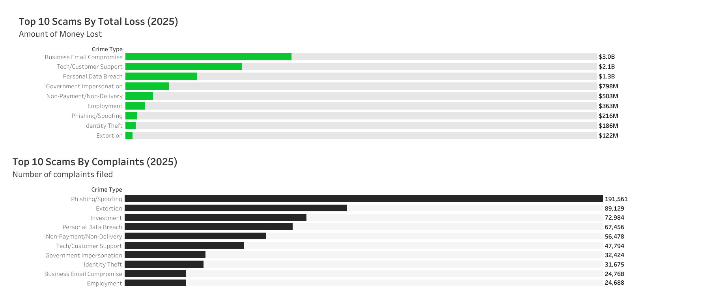
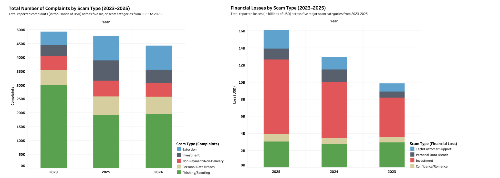

Internet scams are a big industry, and it’s only getting bigger. The purpose of this site is to provide free education to anyone who wants to stay safe from scams.

This dashboard shows 2025 scam data from two angles: how much money was lost, and how many complaints were filed.
By total loss: Investment scams dominate at 8.6 billion dollars, nearly triple the next category, Business Email Compromise (3.0 billion dollars). Tech/Customer Support (2.1 billion) and Personal Data Breach (1.3 billion) round out the top four. The rest (Government Impersonation, Non-Payment/Non-Delivery, Employment, Phishing/Spoofing, Identity Theft) are all under 800 million dollars.
By complaints: Phishing/Spoofing leads by a wide margin with 191,561 complaints. Extortion (89,129) and Investment (72,984) follow, then Personal Data Breach, Non-Payment/Non-Delivery, Tech/Customer Support, Government Impersonation, and Identity Theft (~31.7K).

This dashboard compares scam trends from 2023 to 2025: the number of complaints on the left, and money lost on the right.
Complaints (left chart): Total complaints were about 493K in 2023, dropped to about 443K in 2024, then rose to about 478K in 2025. Phishing/Spoofing is the biggest category every year, but it fell from about 300K in 2023 to about 192K in 2025. Extortion and Investment complaints both grew over the period. Extortion went from about 49K to about 89K, and Investment from about 38K to about 73K.
Financial losses (right chart): Total losses climbed every year, from about 9.9 billion dollars in 2023 to about 13 billion in 2024 and about 16 billion in 2025. Investment scams drive most of that growth, rising from about 4.6 billion to about 8.7 billion. The other categories (Tech/Customer Support, Personal Data Breach, Confidence/Romance, and the green segment) stay much smaller by comparison.